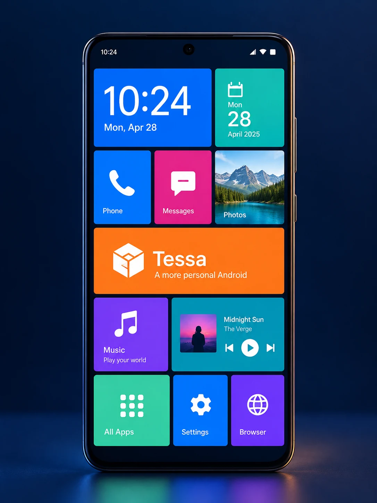
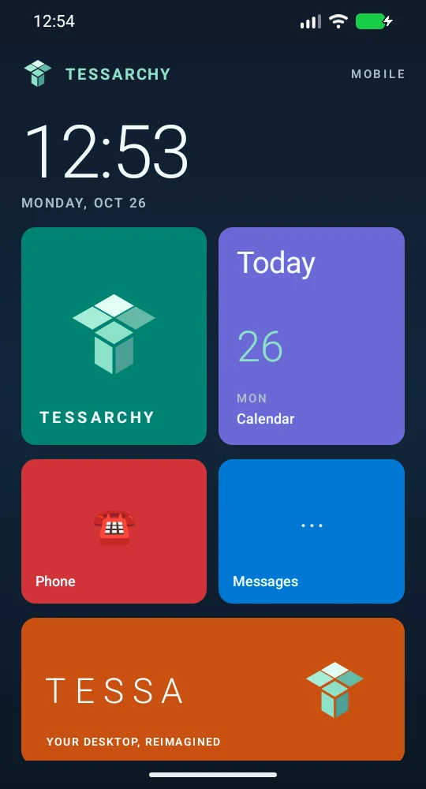
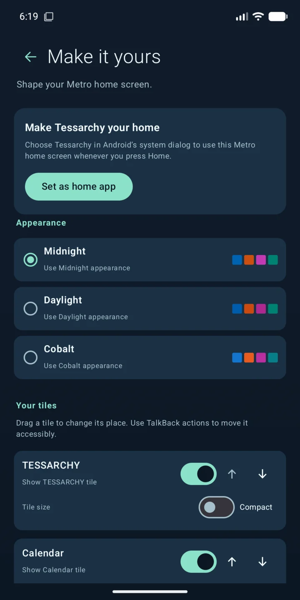
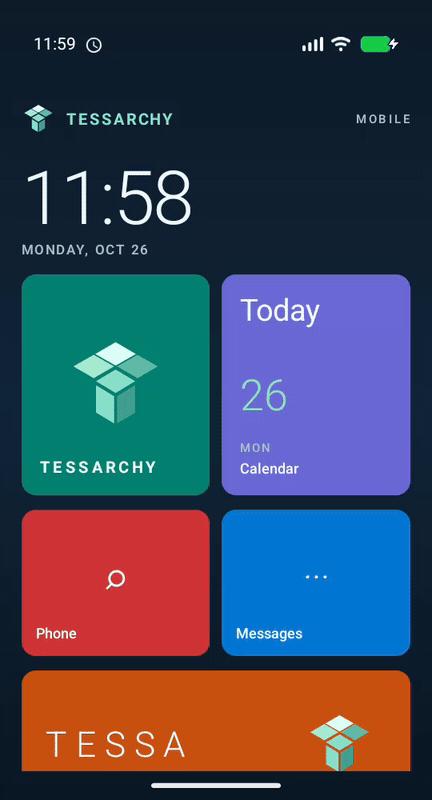

09:41
Information up front
Time, date, and activity have a place on the home screen.
AN OPEN ANDROID EXPERIMENT / BUILD 0.1
Tessarchy Android Edition brings a vivid, glanceable Metro language to Android, then asks how much more personal a phone can become.

Metro made the home screen feel like a living surface: typographic, direct, and full of color. Tessarchy takes that clarity and gives it a new job — to make a phone feel like a workspace that belongs to you.
Tiles bring the most useful things forward. Their color signals where to look. Their size gives information room to breathe. The surrounding interface stays quiet, so the content can speak.
Read the product and technical guide ↗Time, date, and activity have a place on the home screen.
Distinct tiles give actions and information their own visual address.
Strong hierarchy keeps the screen readable at a distance and in motion.
The direction is a phone that adapts to the person using it.
The first Tessarchy layer is now a customizable Compose launcher, running on the Android 17 emulator.

Time and date set the rhythm. Reorder, resize, or hide tiles, then choose Midnight, Daylight, or Cobalt for the frame.

Pick a palette, control tile size and visibility, or reorder tiles with touch and TalkBack actions.
A short recording from the emulator shows the current interaction model in motion.
Watch the full MP4 ↗
The Metro foundation is a starting point, not a fixed skin. These studies explore how color, contrast, and tile scale can change while the same Tessarchy structure holds together.
✳ Concept artwork is an exploration of direction. Only the emulator captures above represent the implemented app.
Start at the surface and earn every deeper layer. Android stays responsible for the foundations while Tessarchy progressively takes ownership of the experience.
Home · tiles · app drawer · gesture language
Navigation · notifications · quick settings · lock screen
Tessa · media · communication · accessibility
Framework · AOSP · permissions · application runtime
Kernel · vendor integration · radio · camera · power
The next releases move from polish to personalization, then measure what deeper Android integration should look like.
Open the full 20-item audit roadmap ↗Android Home flow, app drawer, accessibility pass, and a validated debug build.
Give color, size, identity, and action one shared system. Begin editing and saved layouts.
Connect useful system data, improve keyboard behavior, and cover the interface with automated checks.
Validate deeper OS work on a virtual platform before making a recovery-safe OnePlus 7 plan.
A SMALL PROJECT WITH A BIG SURFACE
Tessarchy Android Edition is public and in release-candidate development. See what runs, browse the concepts, and follow the research and engineering roadmap.